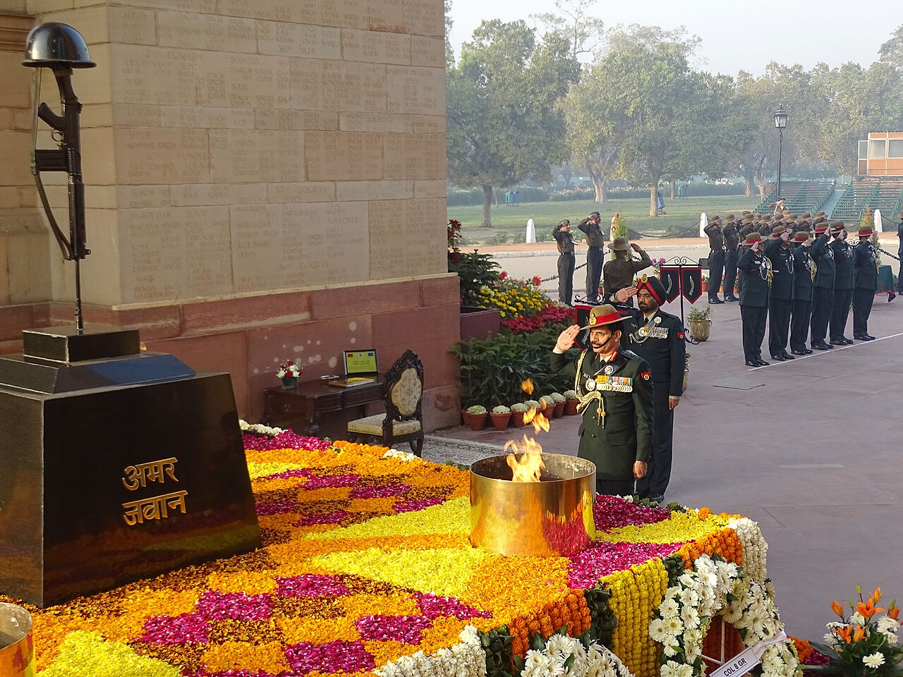

Regiments · Heritage
Ayo Gorkhali: The Legend of the Gorkhas

There is a saying among the Gorkhas: "Kaayar hunu bhanda marnu ramro" — "It is better to die than to be a coward." Few units in any army have lived up to a motto so completely. The Gorkha regiments of the Indian Army are, by reputation, among the bravest soldiers on earth.
My book is full of unyielding spirits; the Gorkha is perhaps their living embodiment.
A bond forged in battle
The Gorkhas — soldiers drawn largely from the hills of Nepal and from Indian Gorkha communities — have served with extraordinary distinction for over two centuries. Their relationship with the rest of the army began in mutual respect on the battlefield, and grew into one of the most storied martial traditions in the world.[1]
Their famous curved knife, the khukri, is both a tool and a symbol; their war cry, "Ayo Gorkhali!" — "the Gorkhas are coming!" — has struck fear into adversaries across many wars.[1]
Fear does not linger in our stride, for courage walks where doubts subside.
Valour beyond counting
Gorkha soldiers have won the highest honours of multiple nations. In the Indian Army, Gorkha regiments have produced Param Vir Chakra recipients and countless other decorated heroes — including, in the Kargil War, Lieutenant Manoj Kumar Pandey of the 11 Gorkha Rifles, who was awarded the Param Vir Chakra posthumously.
Even Field Marshal Sam Manekshaw, an officer of the Gorkhas, paid them the ultimate compliment: that if a man said he was not afraid of dying, he was either lying or he was a Gorkha.
The heart behind the legend
What is easy to miss behind the fearsome reputation is the Gorkha's renowned warmth, loyalty and humility off the battlefield. The same soldiers spoken of in hushed tones by their enemies are, among their own, gentle, cheerful and famously devoted.
That combination — ferocity in defence of others, gentleness in themselves — is the very heart of the soldier my poems try to honour. The Gorkha does not fight because he loves war. He fights, as the poem says, because "the land we guard is worth it all."
Sources & further reading
All images via Wikimedia Commons, used under the licences shown in each caption.